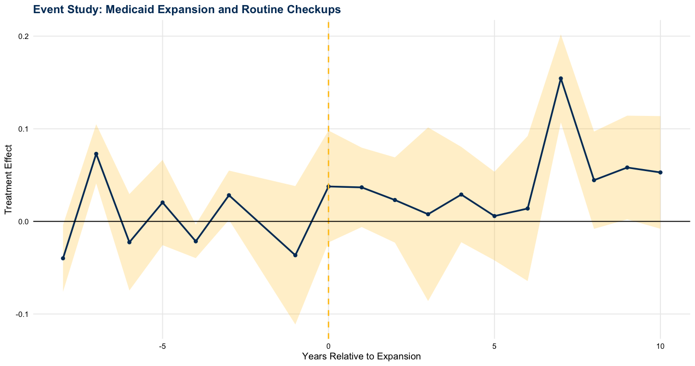

I am a statistician in training with a strong interest in causal inference, public health, and policy-focused research. I enjoy turning complex datasets into meaningful insights that can inform real-world decisions. Outside of research, I enjoy staying active, exploring new places, and spending time on creative projects. I value balance, curiosity, and continuous learning, whether that’s through data, new experiences, or collaborating with others. My goal is to combine strong statistical methods with practical impact while growing both professionally and personally.
Master’s Thesis: Did Medicaid Expansion Increase Preventive Care?
Health policy evaluation, preventive care utilization, observational data, and reproducible statistical analysis.
A quick overview of the work I care about and the kinds of questions I enjoy studying.
A thesis project centered on Medicaid expansion, preventive care, and policy-relevant statistical evidence.

This project evaluates whether Medicaid expansion was associated with increased preventive care utilization using BRFSS data and modern causal inference methods.
The figure shown here provides a visual summary from the analysis. Overall, the results suggest improvement in preventive care outcomes following expansion.
Areas that shape the kinds of projects and methods I want to keep developing.
Estimating treatment and policy effects from observational data using applied statistical methods.
Using statistical evidence to understand healthcare access, preventive care, and community outcomes.
Creating clean workflows and research outputs that are transparent, organized, and easy to communicate.
A quick view of the academic and technical strengths behind my current portfolio.
You can connect with me through GitHub and LinkedIn.
This website highlights my current research portfolio and will continue to grow with future projects, presentations, and academic work.